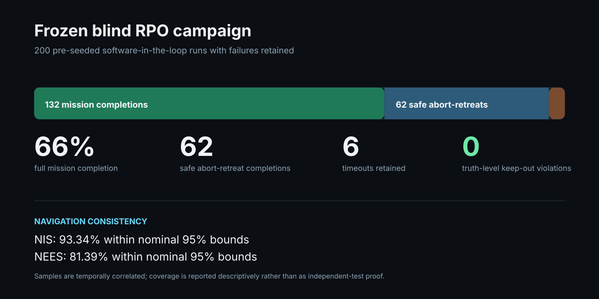

Home / Projects / ORBITALIS-RPO
ORBITALIS-RPO
SPACECRAFT RPO · RELATIVE NAVIGATION · GNC · 6-DOF · AUTONOMY · VERIFICATION
A representative software-in-the-loop digital twin for autonomous spacecraft inspection, rendezvous, proximity operations, constrained guidance and contingency retreat.

01Evidence you can inspect
The project retains machine-readable results, failed Monte Carlo cases, requirements, provenance records, verification scripts and an evidence manifest rather than presenting only screenshots or headline metrics.
97ebd99. The frozen 550 km SSO scenario remains the common verification reference.Pinned sourceEvidence index
Failures are retained, not hidden
132 of 200 cases completed the full mission, 62 completed a safe abort-retreat, and six timed out. All failed validation cases remain part of the evidence set.
Open retained campaign evidence02Mission problem
The governing question is whether a representative 12U-class autonomous inspector near a cooperative target in a 550 km circular sun-synchronous orbit can commission, rendezvous, pass staged hold points, execute a 30 to 100 m inspection trajectory, and retreat while closing navigation, safety, propellant, power, data, communications and degraded-mode constraints.
The project is intentionally a digital engineering exercise. It tests whether the mission logic and models close together, not whether the design is flight qualified.
03Engineering stack
- Two-body and J2 orbital propagation
- Clohessy-Wiltshire relative dynamics
- Asynchronous relative navigation with bias, latency, dropout and outliers
- Waypoint guidance, keep-out monitors and abort/retreat logic
- Constrained QP / barrier guidance discrimination case
- Quaternion rigid-body 6-DOF spacecraft plant
- Python executable reference implementation
- Dependency-free C++20 SIL core checked against frozen vectors
- Autonomy executive and scripted operations rehearsals
- Power, eclipse, storage, thermal and propellant closure
- FMEA, hazard log and collision fault tree
- Requirements, provenance and deterministic evidence manifest
04Frozen blind campaign
Navigation consistency was also retained: 93.34% of NIS samples and 81.39% of NEES samples fell within the nominal 95% bounds. Because samples are temporally correlated, those percentages are descriptive coverage metrics rather than independent hypothesis-test proof.
05Cross-checks and closure
| Evidence | Observed result | Scope |
|---|---|---|
| J2 numerical convergence | 6.3237e-05 m final-position difference | Tightest nonreference numerical case |
| 6-DOF invariants | Quaternion norm error 2.22e-16 | Software plant verification |
| Constrained guidance | 22.004 m minimum in discrimination case | Unsafe baseline reaches 10 m |
| C++ equivalence | 64 CW + 32 control vectors pass | Frozen Python-reference vectors |
| Resource closure | 90% min SOC; 0.1168 kg propellant | Representative coupled mission timeline |
06Claim boundary
ORBITALIS-RPO is a software-in-the-loop engineering portfolio project. It does not claim flight readiness, certification, collision-risk assurance or hardware validation. Hardware-calibrated sensor, actuator, timing, thermal and communications inputs are not available and remain representative.
GMAT input generation, an Orekit harness and an STK/PySTK execution probe are prepared, but those external tools have not been executed in the verified environment. The project does not present prepared inputs as cross-tool validation.